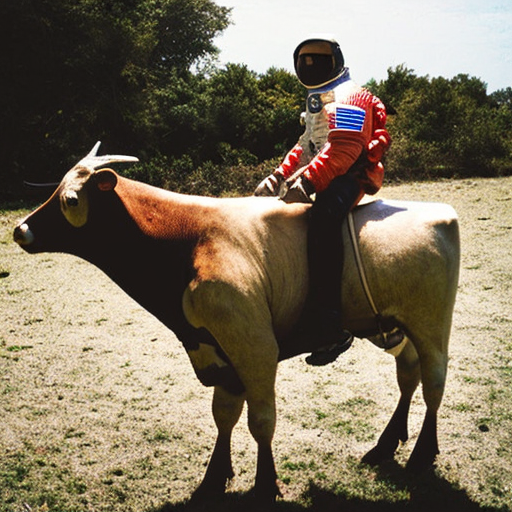

import warnings
warnings.filterwarnings('ignore')
import logging
from pathlib import Path
import matplotlib.pyplot as plt
import torch
from fastcore.all import concat
from huggingface_hub import notebook_login
from PIL import Image
from transformers import CLIPTextModel, CLIPTokenizer
from diffusers import AutoencoderKL, UNet2DConditionModel
from diffusers import LMSDiscreteScheduler
from tqdm.auto import tqdm
logging.disable(logging.WARNING)
torch.manual_seed(1)
if not (Path.home()/'.huggingface'/'token').exists(): notebook_login()Exploring the Secrets of Stable Diffusion —- Part 2
You can checkout part one here if you havent.

Welcome back to part 2 of this amazing blog! You are awesome for continuing your learning journey with me. In this part, we will dive deep into the fascinating world of stable diffusion models and how they work. Are you ready? Let’s go!
from PIL import Image
from torchvision import transforms as tfms
from IPython.display import displayWhat are difussion models basically?

Diffusion models are amazing! They can create realistic data from random noise by undoing the noise. For example, an image model can start with a noisy image and end up with a natural image.
Imagine you have a noisy picture of a cat just like above and you want to see the cat clearly. How can you do that? One way is to use a diffusion model for generative image denoising. This is a method that tries to estimate the amount of noise in the image and then subtract it from the noisy image. By doing this repeatedly and updating the model’s parameters, you can get a clean image of the cat as the output. This is how diffusion models can help you recover images from noise.
But this process can be slow, so we use stable diffusion. It makes the image smaller, diffuses it, and then makes it bigger again. If you have enough compute resources like those of google, you can just use diffusion without compressing the image size. Let’s see how stable diffusion works.
Stable diffusion
Like we said, instead of noising and denoising on the actual image, we compress the image to a smaller representation and do all the diffusion processes on the smaller version of the image.
Stable diffusion models have three main components:
- An autoencoder
- A U-net
- A text encoder
You can use pretrained models for these components, which saves you a lot of time and computing power. You can even run this code on a free Google Colab notebook with a 16GB GPU. Let’s inspect all these pieces separately.
Autoencoder
You’re about to learn something amazing: how an autoencoder works! Don’t worry if you don’t know what a transformer model is, you don’t need it for this. An autoencoder has two parts: an encoder and a decoder. The encoder takes some words and turns them into a vector, which is like a list of numbers. The decoder takes that vector and turns it back into words. This way, we can compress and reconstruct information with our model.
A U-net
We love the u-net! It makes our image resizing easy and fast. It takes our image and squeezes it into a tiny representation. This helps us speed up our diffusion process and get high-quality images. Then it expands the results into a full-sized image.
Text Encoder
The text encoder is the one the helps to match our prompt with a corresponding image. For this case we use CLIP which has been trained on a variety of images and can match almost every prompt with a corresponding image.
Let’s get to the actual code.
Let’s get started with the work by grabbing all the goodies we need, including the models. We can instantiate them easily, but we need to specify the repo where they are stored so that we can download them. They are not the defaults, so feel free to pick any of them from the hub. There are plenty of options to choose from.
tokenizer = CLIPTokenizer.from_pretrained("openai/clip-vit-large-patch14", torch_dtype=torch.float16)
text_encoder = CLIPTextModel.from_pretrained("openai/clip-vit-large-patch14", torch_dtype=torch.float16).to("cuda")
vae = AutoencoderKL.from_pretrained("stabilityai/sd-vae-ft-ema", torch_dtype=torch.float16).to("cuda")
unet = UNet2DConditionModel.from_pretrained("CompVis/stable-diffusion-v1-4", subfolder="unet", torch_dtype=torch.float16).to("cuda")
beta_start,beta_end = 0.00085,0.012
scheduler = LMSDiscreteScheduler(beta_start=beta_start, beta_end=beta_end, beta_schedule="scaled_linear", num_train_timesteps=1000)This is the text we will use to create an image with our model. We can ask it to make anything we want, even something silly like cows riding bikes. We also set some parameters to control the size, quality, and similarity of the image. We only want one image for now, so we use a batch size of one.
prompt = ["a photograph of an astronaut riding a cow"]
height = 512
width = 512
num_inference_steps = 70
guidance_scale = 7.5
batch_size = 1Our prompt is a text that we want the model to process. But the model does not understand text, it only understands numbers. So we need to convert our text into numbers. That’s where the tokenizer comes in handy. The tokenizer is a tool that we imported from the hub. It can transform any text into a sequence of numbers that the model can work with. We use the tokenizer on our prompt to get its numeric representation.
text_input = tokenizer(prompt, padding="max_length", max_length=tokenizer.model_max_length, truncation=True, return_tensors="pt")Wow! Check out the outputs! Our text has been transformed into numbers!
text_input['input_ids']tensor([[49406, 320, 8853, 539, 550, 18376, 6765, 320, 9706, 49407,
49407, 49407, 49407, 49407, 49407, 49407, 49407, 49407, 49407, 49407,
49407, 49407, 49407, 49407, 49407, 49407, 49407, 49407, 49407, 49407,
49407, 49407, 49407, 49407, 49407, 49407, 49407, 49407, 49407, 49407,
49407, 49407, 49407, 49407, 49407, 49407, 49407, 49407, 49407, 49407,
49407, 49407, 49407, 49407, 49407, 49407, 49407, 49407, 49407, 49407,
49407, 49407, 49407, 49407, 49407, 49407, 49407, 49407, 49407, 49407,
49407, 49407, 49407, 49407, 49407, 49407, 49407]])We can easily see the matching words in our sentences with a simple loop. Isn’t that amazing?
for t in text_input["input_ids"][0][:9]: print(t,tokenizer.decoder.get(int(t)))tensor(49406) <|startoftext|>
tensor(320) a</w>
tensor(8853) photograph</w>
tensor(539) of</w>
tensor(550) an</w>
tensor(18376) astronaut</w>
tensor(6765) riding</w>
tensor(320) a</w>
tensor(9706) cow</w>Next, we apply a text encoder to transform our tokens into a vector embedding. This is a way of representing the meaning of our text in a numerical form. We can see how big this vector is by looking at its size.
text_embeddings = text_encoder(text_input.input_ids.to("cuda"))[0].half()
text_embeddings.shapetorch.Size([1, 77, 768])We want to create something new, not just copy an image from the web. That’s why we also encode an empty string along with our input. This way, our model can generate a unique output. It’s the same process as before, but with more creativity!
max_length = text_input.input_ids.shape[-1]
uncond_input = tokenizer(
[""] * batch_size, padding="max_length", max_length=max_length, return_tensors="pt"
)
uncond_embeddings = text_encoder(uncond_input.input_ids.to("cuda"))[0].half()
uncond_embeddings.shapetorch.Size([1, 77, 768])We then combine the two embeddings: one that represents our text and another that represents an empty string. Then we use a special function to merge them together and get a single embedding that captures the essence of our text. This way, we can compare different texts based on their embeddings and find the most similar ones.
text_embeddings = torch.cat([uncond_embeddings, text_embeddings])We are ready to make some random noise for our model! We use half precision to speed up the inference and move the data to the GPU. The shape of the latents is smaller than the images because we want to compress them efficiently.
torch.manual_seed(100)
latents = torch.randn((batch_size, unet.in_channels, height // 8, width // 8))
latents = latents.to("cuda").half()
latents.shapetorch.Size([1, 4, 64, 64])As we explained, timesteps control the noise level in the image. The lower the timesteps, the higher the noise and vice versa. So we use the value we defined earlier, which is 70.
scheduler.set_timesteps(num_inference_steps)latents = latents * scheduler.init_noise_sigmascheduler.timestepstensor([999.0000, 984.5217, 970.0435, 955.5652, 941.0870, 926.6087, 912.1304,
897.6522, 883.1739, 868.6957, 854.2174, 839.7391, 825.2609, 810.7826,
796.3043, 781.8261, 767.3478, 752.8696, 738.3913, 723.9130, 709.4348,
694.9565, 680.4783, 666.0000, 651.5217, 637.0435, 622.5652, 608.0870,
593.6087, 579.1304, 564.6522, 550.1739, 535.6957, 521.2174, 506.7391,
492.2609, 477.7826, 463.3043, 448.8261, 434.3478, 419.8696, 405.3913,
390.9130, 376.4348, 361.9565, 347.4783, 333.0000, 318.5217, 304.0435,
289.5652, 275.0870, 260.6087, 246.1304, 231.6522, 217.1739, 202.6957,
188.2174, 173.7391, 159.2609, 144.7826, 130.3043, 115.8261, 101.3478,
86.8696, 72.3913, 57.9130, 43.4348, 28.9565, 14.4783, 0.0000],
dtype=torch.float64)scheduler.sigmastensor([14.6146, 13.3974, 12.3033, 11.3184, 10.4301, 9.6279, 8.9020, 8.2443,
7.6472, 7.1044, 6.6102, 6.1594, 5.7476, 5.3709, 5.0258, 4.7090,
4.4178, 4.1497, 3.9026, 3.6744, 3.4634, 3.2680, 3.0867, 2.9183,
2.7616, 2.6157, 2.4794, 2.3521, 2.2330, 2.1213, 2.0165, 1.9180,
1.8252, 1.7378, 1.6552, 1.5771, 1.5031, 1.4330, 1.3664, 1.3030,
1.2427, 1.1852, 1.1302, 1.0776, 1.0272, 0.9788, 0.9324, 0.8876,
0.8445, 0.8029, 0.7626, 0.7236, 0.6858, 0.6490, 0.6131, 0.5781,
0.5438, 0.5102, 0.4770, 0.4443, 0.4118, 0.3795, 0.3470, 0.3141,
0.2805, 0.2455, 0.2084, 0.1672, 0.1174, 0.0292, 0.0000])We use tqdm to show us a progress bar of our process.
from tqdm.auto import tqdmWe are ready to test our ‘unet’ model on some noisy images. We will vary the noise level and see how well our model can denoise them. Then we will compare the predicted output with the original image.
We guide the predicted image to make it relevant and original to the prompt.
for i, t in enumerate(tqdm(scheduler.timesteps)):
input = torch.cat([latents] * 2)
input = scheduler.scale_model_input(input, t)
# predict the noise residual
with torch.no_grad(): pred = unet(input, t, encoder_hidden_states=text_embeddings).sample
# perform guidance
pred_uncond, pred_text = pred.chunk(2)
pred = pred_uncond + guidance_scale * (pred_text - pred_uncond)
# compute the "previous" noisy sample
latents = scheduler.step(pred, t, latents).prev_sampleWe have successfully created the images. We can then view our image as follows and finally we have an astronaut riding a cow. How cool is that? This is a fun way to experiment with image processing and create some hilarious results.
with torch.no_grad(): image = vae.decode(1 / 0.18215 * latents).sample
image = (image / 2 + 0.5).clamp(0, 1)
image = image[0].detach().cpu().permute(1, 2, 0).numpy()
image = (image * 255).round().astype("uint8")
Image.fromarray(image)
You’ve learned how to do prompt engineering, but what about more advanced techniques like negative prompts or image-to-image generation? If you’re feeling adventurous, you can try to implement them yourself. Or you can visit my github repo Github where I have all the code ready for you.
I hope you enjoyed this tutorial and learned something new. Happy coding and keep me posted on your amazing projects.